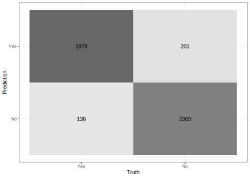
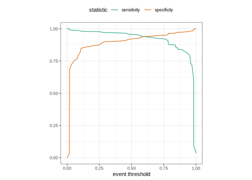
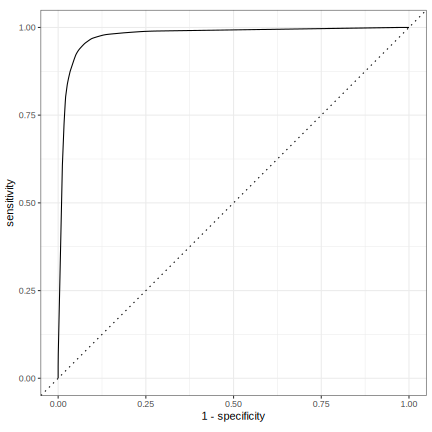

#> ── Attaching packages ──────────────────────────── tidymodels 1.2.0 ──
#> ✔ broom 1.0.6 ✔ rsample 1.2.1.9000
#> ✔ dials 1.2.1 ✔ tibble 3.2.1
#> ✔ dplyr 1.1.4 ✔ tidyr 1.3.1
#> ✔ infer 1.0.7 ✔ tune 1.2.1
#> ✔ modeldata 1.4.0 ✔ workflows 1.1.4
#> ✔ parsnip 1.2.1 ✔ workflowsets 1.1.0
#> ✔ purrr 1.0.2 ✔ yardstick 1.3.1
#> ✔ recipes 1.1.0
#> ── Conflicts ─────────────────────────────── tidymodels_conflicts() ──
#> ✖ purrr::discard() masks scales::discard()
#> ✖ dplyr::filter() masks stats::filter()
#> ✖ dplyr::lag() masks stats::lag()
#> ✖ recipes::step() masks stats::step()
#> • Use suppressPackageStartupMessages() to eliminate package startup messages4 - Evaluating models
Introduction to tidymodels
Looking at predictions
augment(forested_fit, new_data = forested_train)
#> # A tibble: 5,685 × 22
#> .pred_class .pred_Yes .pred_No forested year elevation eastness northness
#> <fct> <dbl> <dbl> <fct> <dbl> <dbl> <dbl> <dbl>
#> 1 No 0.125 0.875 No 2005 164 -84 53
#> 2 Yes 0.538 0.462 No 2005 1713 -66 75
#> 3 No 0.0175 0.983 No 2014 542 -32 -94
#> 4 No 0.0175 0.983 No 2014 759 -2 -99
#> 5 No 0.0175 0.983 No 2014 119 0 0
#> 6 No 0.0175 0.983 No 2014 246 22 -97
#> 7 No 0.0192 0.981 No 2014 235 0 -100
#> 8 No 0.0175 0.983 No 2014 324 71 70
#> 9 No 0.0175 0.983 No 2014 419 86 -49
#> 10 No 0.0175 0.983 No 2014 308 -70 -70
#> # ℹ 5,675 more rows
#> # ℹ 14 more variables: roughness <dbl>, tree_no_tree <fct>, dew_temp <dbl>,
#> # precip_annual <dbl>, temp_annual_mean <dbl>, temp_annual_min <dbl>,
#> # temp_annual_max <dbl>, temp_january_min <dbl>, vapor_min <dbl>,
#> # vapor_max <dbl>, canopy_cover <dbl>, lon <dbl>, lat <dbl>, land_type <fct>Confusion matrix 

Confusion matrix
augment(forested_fit, new_data = forested_train) %>%
conf_mat(truth = forested, estimate = .pred_class)
#> Truth
#> Prediction Yes No
#> Yes 2979 201
#> No 136 2369Confusion matrix
augment(forested_fit, new_data = forested_train) %>%
conf_mat(truth = forested, estimate = .pred_class) %>%
autoplot(type = "heatmap")
Metrics for model performance
augment(forested_fit, new_data = forested_train) %>%
accuracy(truth = forested, estimate = .pred_class)
#> # A tibble: 1 × 3
#> .metric .estimator .estimate
#> <chr> <chr> <dbl>
#> 1 accuracy binary 0.941
There used to be a slide here calling out the pitfalls of accuracy when classes are imbalanced.
Metrics for model performance
augment(forested_fit, new_data = forested_train) %>%
sensitivity(truth = forested, estimate = .pred_class)
#> # A tibble: 1 × 3
#> .metric .estimator .estimate
#> <chr> <chr> <dbl>
#> 1 sensitivity binary 0.956
Metrics for model performance
augment(forested_fit, new_data = forested_train) %>%
specificity(truth = forested, estimate = .pred_class)
#> # A tibble: 1 × 3
#> .metric .estimator .estimate
#> <chr> <chr> <dbl>
#> 1 specificity binary 0.922
Metrics for model performance
We can use metric_set() to combine multiple calculations into one
forested_metrics <- metric_set(accuracy, specificity, sensitivity)
augment(forested_fit, new_data = forested_train) %>%
forested_metrics(truth = forested, estimate = .pred_class)
#> # A tibble: 3 × 3
#> .metric .estimator .estimate
#> <chr> <chr> <dbl>
#> 1 accuracy binary 0.941
#> 2 specificity binary 0.922
#> 3 sensitivity binary 0.956Metrics for model performance
forested_metrics <- metric_set(accuracy, specificity, sensitivity)
augment(forested_fit, new_data = forested_train) %>%
group_by(tree_no_tree) %>%
forested_metrics(truth = forested, estimate = .pred_class)
#> # A tibble: 6 × 4
#> tree_no_tree .metric .estimator .estimate
#> <fct> <chr> <chr> <dbl>
#> 1 Tree accuracy binary 0.947
#> 2 No tree accuracy binary 0.934
#> 3 Tree specificity binary 0.642
#> 4 No tree specificity binary 0.958
#> 5 Tree sensitivity binary 0.980
#> 6 No tree sensitivity binary 0.815Two class data
These metrics assume that we know the threshold for converting “soft” probability predictions into “hard” class predictions.
. . .
Is a 50% threshold good?
What happens if we say that we need to be 80% sure to declare an event?
- sensitivity ⬇️, specificity ⬆️
. . .
What happens for a 20% threshold?
- sensitivity ⬆️, specificity ⬇️
Varying the threshold

ROC curves
To make an ROC (receiver operator characteristic) curve, we:
calculate the sensitivity and specificity for all possible thresholds
plot false positive rate (x-axis) versus true positive rate (y-axis)
given that sensitivity is the true positive rate, and specificity is the true negative rate. Hence 1 - specificity is the false positive rate.
. . .
We can use the area under the ROC curve as a classification metric:
- ROC AUC = 1 💯
- ROC AUC = 1/2 😢
ROC curves are insensitive to class imbalance.
ROC curves
# Assumes _first_ factor level is event; there are options to change that
augment(forested_fit, new_data = forested_train) %>%
roc_curve(truth = forested, .pred_Yes) %>%
slice(1, 20, 50)
#> # A tibble: 3 × 3
#> .threshold specificity sensitivity
#> <dbl> <dbl> <dbl>
#> 1 -Inf 0 1
#> 2 0.267 0.888 0.974
#> 3 0.875 0.974 0.840
augment(forested_fit, new_data = forested_train) %>%
roc_auc(truth = forested, .pred_Yes)
#> # A tibble: 1 × 3
#> .metric .estimator .estimate
#> <chr> <chr> <dbl>
#> 1 roc_auc binary 0.977ROC curve plot
augment(forested_fit, new_data = forested_train) %>%
roc_curve(truth = forested, .pred_Yes) %>%
autoplot()
Your turn

Compute and plot an ROC curve for your current model.
What data are being used for this ROC curve plot?
05:00
⚠️ DANGERS OF OVERFITTING ⚠️
Dangers of overfitting ⚠️

Dangers of overfitting ⚠️

Dangers of overfitting ⚠️
forested_fit %>%
augment(forested_train)
#> # A tibble: 5,685 × 22
#> .pred_class .pred_Yes .pred_No forested year elevation eastness northness
#> <fct> <dbl> <dbl> <fct> <dbl> <dbl> <dbl> <dbl>
#> 1 No 0.125 0.875 No 2005 164 -84 53
#> 2 Yes 0.538 0.462 No 2005 1713 -66 75
#> 3 No 0.0175 0.983 No 2014 542 -32 -94
#> 4 No 0.0175 0.983 No 2014 759 -2 -99
#> 5 No 0.0175 0.983 No 2014 119 0 0
#> 6 No 0.0175 0.983 No 2014 246 22 -97
#> 7 No 0.0192 0.981 No 2014 235 0 -100
#> 8 No 0.0175 0.983 No 2014 324 71 70
#> 9 No 0.0175 0.983 No 2014 419 86 -49
#> 10 No 0.0175 0.983 No 2014 308 -70 -70
#> # ℹ 5,675 more rows
#> # ℹ 14 more variables: roughness <dbl>, tree_no_tree <fct>, dew_temp <dbl>,
#> # precip_annual <dbl>, temp_annual_mean <dbl>, temp_annual_min <dbl>,
#> # temp_annual_max <dbl>, temp_january_min <dbl>, vapor_min <dbl>,
#> # vapor_max <dbl>, canopy_cover <dbl>, lon <dbl>, lat <dbl>, land_type <fct>We call this “resubstitution” or “repredicting the training set”
Dangers of overfitting ⚠️
forested_fit %>%
augment(forested_train) %>%
accuracy(forested, .pred_class)
#> # A tibble: 1 × 3
#> .metric .estimator .estimate
#> <chr> <chr> <dbl>
#> 1 accuracy binary 0.941We call this a “resubstitution estimate”
Dangers of overfitting ⚠️
forested_fit %>%
augment(forested_train) %>%
accuracy(forested, .pred_class)
#> # A tibble: 1 × 3
#> .metric .estimator .estimate
#> <chr> <chr> <dbl>
#> 1 accuracy binary 0.941Dangers of overfitting ⚠️
forested_fit %>%
augment(forested_train) %>%
accuracy(forested, .pred_class)
#> # A tibble: 1 × 3
#> .metric .estimator .estimate
#> <chr> <chr> <dbl>
#> 1 accuracy binary 0.941forested_fit %>%
augment(forested_test) %>%
accuracy(forested, .pred_class)
#> # A tibble: 1 × 3
#> .metric .estimator .estimate
#> <chr> <chr> <dbl>
#> 1 accuracy binary 0.895. . .
⚠️ Remember that we’re demonstrating overfitting
. . .
⚠️ Don’t use the test set until the end of your modeling analysis
Your turn
Use augment() and a metric function to compute a classification metric like brier_class().
Compute the metrics for both training and testing data to demonstrate overfitting!
Notice the evidence of overfitting! ⚠️
05:00
Dangers of overfitting ⚠️
forested_fit %>%
augment(forested_train) %>%
brier_class(forested, .pred_Yes)
#> # A tibble: 1 × 3
#> .metric .estimator .estimate
#> <chr> <chr> <dbl>
#> 1 brier_class binary 0.0463forested_fit %>%
augment(forested_test) %>%
brier_class(forested, .pred_Yes)
#> # A tibble: 1 × 3
#> .metric .estimator .estimate
#> <chr> <chr> <dbl>
#> 1 brier_class binary 0.0791. . .
What if we want to compare more models?
. . .
And/or more model configurations?
. . .
And we want to understand if these are important differences?
The testing data are precious 💎
How can we use the training data to compare and evaluate different models? 🤔
Cross-validation

Cross-validation

Your turn
If we use 10 folds, what percent of the training data
- ends up in analysis
- ends up in assessment
for each fold?

03:00
Cross-validation 
vfold_cv(forested_train) # v = 10 is default
#> # 10-fold cross-validation
#> # A tibble: 10 × 2
#> splits id
#> <list> <chr>
#> 1 <split [5116/569]> Fold01
#> 2 <split [5116/569]> Fold02
#> 3 <split [5116/569]> Fold03
#> 4 <split [5116/569]> Fold04
#> 5 <split [5116/569]> Fold05
#> 6 <split [5117/568]> Fold06
#> 7 <split [5117/568]> Fold07
#> 8 <split [5117/568]> Fold08
#> 9 <split [5117/568]> Fold09
#> 10 <split [5117/568]> Fold10Cross-validation
What is in this?
forested_folds <- vfold_cv(forested_train)
forested_folds$splits[1:3]
#> [[1]]
#> <Analysis/Assess/Total>
#> <5116/569/5685>
#>
#> [[2]]
#> <Analysis/Assess/Total>
#> <5116/569/5685>
#>
#> [[3]]
#> <Analysis/Assess/Total>
#> <5116/569/5685>Talk about a list column, storing non-atomic types in dataframe
Cross-validation
vfold_cv(forested_train, v = 5)
#> # 5-fold cross-validation
#> # A tibble: 5 × 2
#> splits id
#> <list> <chr>
#> 1 <split [4548/1137]> Fold1
#> 2 <split [4548/1137]> Fold2
#> 3 <split [4548/1137]> Fold3
#> 4 <split [4548/1137]> Fold4
#> 5 <split [4548/1137]> Fold5Cross-validation
vfold_cv(forested_train, strata = forested)
#> # 10-fold cross-validation using stratification
#> # A tibble: 10 × 2
#> splits id
#> <list> <chr>
#> 1 <split [5116/569]> Fold01
#> 2 <split [5116/569]> Fold02
#> 3 <split [5116/569]> Fold03
#> 4 <split [5116/569]> Fold04
#> 5 <split [5116/569]> Fold05
#> 6 <split [5117/568]> Fold06
#> 7 <split [5117/568]> Fold07
#> 8 <split [5117/568]> Fold08
#> 9 <split [5117/568]> Fold09
#> 10 <split [5117/568]> Fold10. . .
Stratification often helps, with very little downside
Cross-validation
We’ll use this setup:
set.seed(123)
forested_folds <- vfold_cv(forested_train, v = 10, strata = forested)
forested_folds
#> # 10-fold cross-validation using stratification
#> # A tibble: 10 × 2
#> splits id
#> <list> <chr>
#> 1 <split [5116/569]> Fold01
#> 2 <split [5116/569]> Fold02
#> 3 <split [5116/569]> Fold03
#> 4 <split [5116/569]> Fold04
#> 5 <split [5116/569]> Fold05
#> 6 <split [5117/568]> Fold06
#> 7 <split [5117/568]> Fold07
#> 8 <split [5117/568]> Fold08
#> 9 <split [5117/568]> Fold09
#> 10 <split [5117/568]> Fold10. . .
Set the seed when creating resamples
We are equipped with metrics and resamples!
Fit our model to the resamples
forested_res <- fit_resamples(forested_wflow, forested_folds)
forested_res
#> # Resampling results
#> # 10-fold cross-validation using stratification
#> # A tibble: 10 × 4
#> splits id .metrics .notes
#> <list> <chr> <list> <list>
#> 1 <split [5116/569]> Fold01 <tibble [3 × 4]> <tibble [0 × 3]>
#> 2 <split [5116/569]> Fold02 <tibble [3 × 4]> <tibble [0 × 3]>
#> 3 <split [5116/569]> Fold03 <tibble [3 × 4]> <tibble [0 × 3]>
#> 4 <split [5116/569]> Fold04 <tibble [3 × 4]> <tibble [0 × 3]>
#> 5 <split [5116/569]> Fold05 <tibble [3 × 4]> <tibble [0 × 3]>
#> 6 <split [5117/568]> Fold06 <tibble [3 × 4]> <tibble [0 × 3]>
#> 7 <split [5117/568]> Fold07 <tibble [3 × 4]> <tibble [0 × 3]>
#> 8 <split [5117/568]> Fold08 <tibble [3 × 4]> <tibble [0 × 3]>
#> 9 <split [5117/568]> Fold09 <tibble [3 × 4]> <tibble [0 × 3]>
#> 10 <split [5117/568]> Fold10 <tibble [3 × 4]> <tibble [0 × 3]>Evaluating model performance 
forested_res %>%
collect_metrics()
#> # A tibble: 3 × 6
#> .metric .estimator mean n std_err .config
#> <chr> <chr> <dbl> <int> <dbl> <chr>
#> 1 accuracy binary 0.892 10 0.00297 Preprocessor1_Model1
#> 2 brier_class binary 0.0821 10 0.00237 Preprocessor1_Model1
#> 3 roc_auc binary 0.952 10 0.00272 Preprocessor1_Model1collect_metrics() is one of a suite of collect_*() functions that can be used to work with columns of tuning results. Most columns in a tuning result prefixed with . have a corresponding collect_*() function with options for common summaries.
. . .
We can reliably measure performance using only the training data 🎉
Comparing metrics
How do the metrics from resampling compare to the metrics from training and testing?
forested_res %>%
collect_metrics() %>%
select(.metric, mean, n)
#> # A tibble: 3 × 3
#> .metric mean n
#> <chr> <dbl> <int>
#> 1 accuracy 0.892 10
#> 2 brier_class 0.0821 10
#> 3 roc_auc 0.952 10The ROC AUC previously was
- 0.98 for the training set
- 0.95 for test set
. . .
Remember that:
⚠️ the training set gives you overly optimistic metrics
⚠️ the test set is precious
Evaluating model performance
# Save the assessment set results
ctrl_forested <- control_resamples(save_pred = TRUE)
forested_res <- fit_resamples(forested_wflow, forested_folds, control = ctrl_forested)
forested_res
#> # Resampling results
#> # 10-fold cross-validation using stratification
#> # A tibble: 10 × 5
#> splits id .metrics .notes .predictions
#> <list> <chr> <list> <list> <list>
#> 1 <split [5116/569]> Fold01 <tibble [3 × 4]> <tibble [0 × 3]> <tibble>
#> 2 <split [5116/569]> Fold02 <tibble [3 × 4]> <tibble [0 × 3]> <tibble>
#> 3 <split [5116/569]> Fold03 <tibble [3 × 4]> <tibble [0 × 3]> <tibble>
#> 4 <split [5116/569]> Fold04 <tibble [3 × 4]> <tibble [0 × 3]> <tibble>
#> 5 <split [5116/569]> Fold05 <tibble [3 × 4]> <tibble [0 × 3]> <tibble>
#> 6 <split [5117/568]> Fold06 <tibble [3 × 4]> <tibble [0 × 3]> <tibble>
#> 7 <split [5117/568]> Fold07 <tibble [3 × 4]> <tibble [0 × 3]> <tibble>
#> 8 <split [5117/568]> Fold08 <tibble [3 × 4]> <tibble [0 × 3]> <tibble>
#> 9 <split [5117/568]> Fold09 <tibble [3 × 4]> <tibble [0 × 3]> <tibble>
#> 10 <split [5117/568]> Fold10 <tibble [3 × 4]> <tibble [0 × 3]> <tibble>Evaluating model performance
# Save the assessment set results
forested_preds <- collect_predictions(forested_res)
forested_preds
#> # A tibble: 5,685 × 7
#> .pred_class .pred_Yes .pred_No id .row forested .config
#> <fct> <dbl> <dbl> <chr> <int> <fct> <chr>
#> 1 No 0.143 0.857 Fold01 2 No Preprocessor1_Model1
#> 2 No 0.02 0.98 Fold01 13 No Preprocessor1_Model1
#> 3 No 0.0959 0.904 Fold01 24 No Preprocessor1_Model1
#> 4 No 0.00177 0.998 Fold01 43 No Preprocessor1_Model1
#> 5 No 0.00177 0.998 Fold01 49 No Preprocessor1_Model1
#> 6 No 0.00177 0.998 Fold01 72 No Preprocessor1_Model1
#> 7 Yes 0.985 0.0148 Fold01 78 No Preprocessor1_Model1
#> 8 No 0.00177 0.998 Fold01 82 No Preprocessor1_Model1
#> 9 No 0.00177 0.998 Fold01 94 No Preprocessor1_Model1
#> 10 Yes 0.936 0.0636 Fold01 95 No Preprocessor1_Model1
#> # ℹ 5,675 more rowsEvaluating model performance
forested_preds %>%
group_by(id) %>%
forested_metrics(truth = forested, estimate = .pred_class)
#> # A tibble: 30 × 4
#> id .metric .estimator .estimate
#> <chr> <chr> <chr> <dbl>
#> 1 Fold01 accuracy binary 0.898
#> 2 Fold02 accuracy binary 0.879
#> 3 Fold03 accuracy binary 0.886
#> 4 Fold04 accuracy binary 0.895
#> 5 Fold05 accuracy binary 0.912
#> 6 Fold06 accuracy binary 0.884
#> 7 Fold07 accuracy binary 0.896
#> 8 Fold08 accuracy binary 0.887
#> 9 Fold09 accuracy binary 0.894
#> 10 Fold10 accuracy binary 0.887
#> # ℹ 20 more rowsWhere are the fitted models?
forested_res
#> # Resampling results
#> # 10-fold cross-validation using stratification
#> # A tibble: 10 × 5
#> splits id .metrics .notes .predictions
#> <list> <chr> <list> <list> <list>
#> 1 <split [5116/569]> Fold01 <tibble [3 × 4]> <tibble [0 × 3]> <tibble>
#> 2 <split [5116/569]> Fold02 <tibble [3 × 4]> <tibble [0 × 3]> <tibble>
#> 3 <split [5116/569]> Fold03 <tibble [3 × 4]> <tibble [0 × 3]> <tibble>
#> 4 <split [5116/569]> Fold04 <tibble [3 × 4]> <tibble [0 × 3]> <tibble>
#> 5 <split [5116/569]> Fold05 <tibble [3 × 4]> <tibble [0 × 3]> <tibble>
#> 6 <split [5117/568]> Fold06 <tibble [3 × 4]> <tibble [0 × 3]> <tibble>
#> 7 <split [5117/568]> Fold07 <tibble [3 × 4]> <tibble [0 × 3]> <tibble>
#> 8 <split [5117/568]> Fold08 <tibble [3 × 4]> <tibble [0 × 3]> <tibble>
#> 9 <split [5117/568]> Fold09 <tibble [3 × 4]> <tibble [0 × 3]> <tibble>
#> 10 <split [5117/568]> Fold10 <tibble [3 × 4]> <tibble [0 × 3]> <tibble>. . .
🗑️
Alternate resampling schemes
Bootstrapping

Bootstrapping
set.seed(3214)
bootstraps(forested_train)
#> # Bootstrap sampling
#> # A tibble: 25 × 2
#> splits id
#> <list> <chr>
#> 1 <split [5685/2075]> Bootstrap01
#> 2 <split [5685/2093]> Bootstrap02
#> 3 <split [5685/2129]> Bootstrap03
#> 4 <split [5685/2093]> Bootstrap04
#> 5 <split [5685/2111]> Bootstrap05
#> 6 <split [5685/2105]> Bootstrap06
#> 7 <split [5685/2139]> Bootstrap07
#> 8 <split [5685/2079]> Bootstrap08
#> 9 <split [5685/2113]> Bootstrap09
#> 10 <split [5685/2101]> Bootstrap10
#> # ℹ 15 more rowsThe whole game - status update

Your turn
Create:
- Monte Carlo Cross-Validation sets
- validation set
(use the reference guide to find the functions)
Don’t forget to set a seed when you resample!
05:00
Monte Carlo Cross-Validation
set.seed(322)
mc_cv(forested_train, times = 10)
#> # Monte Carlo cross-validation (0.75/0.25) with 10 resamples
#> # A tibble: 10 × 2
#> splits id
#> <list> <chr>
#> 1 <split [4263/1422]> Resample01
#> 2 <split [4263/1422]> Resample02
#> 3 <split [4263/1422]> Resample03
#> 4 <split [4263/1422]> Resample04
#> 5 <split [4263/1422]> Resample05
#> 6 <split [4263/1422]> Resample06
#> 7 <split [4263/1422]> Resample07
#> 8 <split [4263/1422]> Resample08
#> 9 <split [4263/1422]> Resample09
#> 10 <split [4263/1422]> Resample10Validation set
set.seed(853)
forested_val_split <- initial_validation_split(forested, strata = forested)
validation_set(forested_val_split)
#> # A tibble: 1 × 2
#> splits id
#> <list> <chr>
#> 1 <split [4263/1422]> validation. . .
A validation set is just another type of resample
Decision tree 🌳
Random forest 🌳🌲🌴🌵🌴🌳🌳🌴🌲🌵🌴🌲🌳🌴🌳🌵🌵🌴🌲🌲🌳🌴🌳🌴🌲🌴🌵🌴🌲🌴🌵🌲🌵🌴🌲🌳🌴🌵🌳🌴🌳
Random forest 🌳🌲🌴🌵🌳🌳🌴🌲🌵🌴🌳🌵
Ensemble many decision tree models
All the trees vote! 🗳️
Bootstrap aggregating + random predictor sampling
. . .
- Often works well without tuning hyperparameters (more on this in Advanced tidymodels!), as long as there are enough trees
Create a random forest model 
rf_spec <- rand_forest(trees = 1000, mode = "classification")
rf_spec
#> Random Forest Model Specification (classification)
#>
#> Main Arguments:
#> trees = 1000
#>
#> Computational engine: rangerCreate a random forest model 
rf_wflow <- workflow(forested ~ ., rf_spec)
rf_wflow
#> ══ Workflow ══════════════════════════════════════════════════════════
#> Preprocessor: Formula
#> Model: rand_forest()
#>
#> ── Preprocessor ──────────────────────────────────────────────────────
#> forested ~ .
#>
#> ── Model ─────────────────────────────────────────────────────────────
#> Random Forest Model Specification (classification)
#>
#> Main Arguments:
#> trees = 1000
#>
#> Computational engine: rangerYour turn
Use fit_resamples() and rf_wflow to:
- keep predictions
- compute metrics
08:00
Evaluating model performance
ctrl_forested <- control_resamples(save_pred = TRUE)
# Random forest uses random numbers so set the seed first
set.seed(2)
rf_res <- fit_resamples(rf_wflow, forested_folds, control = ctrl_forested)
collect_metrics(rf_res)
#> # A tibble: 3 × 6
#> .metric .estimator mean n std_err .config
#> <chr> <chr> <dbl> <int> <dbl> <chr>
#> 1 accuracy binary 0.915 10 0.00300 Preprocessor1_Model1
#> 2 brier_class binary 0.0619 10 0.00196 Preprocessor1_Model1
#> 3 roc_auc binary 0.972 10 0.00183 Preprocessor1_Model1The whole game - status update

The final fit
Suppose that we are happy with our random forest model.
Let’s fit the model on the training set and verify our performance using the test set.
. . .
We’ve shown you fit() and predict() (+ augment()) but there is a shortcut:
# forested_split has train + test info
final_fit <- last_fit(rf_wflow, forested_split)
final_fit
#> # Resampling results
#> # Manual resampling
#> # A tibble: 1 × 6
#> splits id .metrics .notes .predictions .workflow
#> <list> <chr> <list> <list> <list> <list>
#> 1 <split [5685/1422]> train/test split <tibble> <tibble> <tibble> <workflow>What is in final_fit?
collect_metrics(final_fit)
#> # A tibble: 3 × 4
#> .metric .estimator .estimate .config
#> <chr> <chr> <dbl> <chr>
#> 1 accuracy binary 0.909 Preprocessor1_Model1
#> 2 roc_auc binary 0.970 Preprocessor1_Model1
#> 3 brier_class binary 0.0652 Preprocessor1_Model1. . .
These are metrics computed with the test set
What is in final_fit?
collect_predictions(final_fit)
#> # A tibble: 1,422 × 7
#> .pred_class .pred_Yes .pred_No id .row forested .config
#> <fct> <dbl> <dbl> <chr> <int> <fct> <chr>
#> 1 Yes 0.979 0.0212 train/test split 5 Yes Preprocessor1…
#> 2 Yes 0.969 0.0314 train/test split 11 Yes Preprocessor1…
#> 3 Yes 0.963 0.0373 train/test split 12 Yes Preprocessor1…
#> 4 Yes 0.942 0.0584 train/test split 15 Yes Preprocessor1…
#> 5 Yes 0.782 0.218 train/test split 16 Yes Preprocessor1…
#> 6 Yes 0.987 0.0127 train/test split 21 Yes Preprocessor1…
#> 7 No 0 1 train/test split 22 No Preprocessor1…
#> 8 No 0 1 train/test split 26 No Preprocessor1…
#> 9 No 0.0797 0.920 train/test split 32 No Preprocessor1…
#> 10 No 0.00145 0.999 train/test split 35 No Preprocessor1…
#> # ℹ 1,412 more rowsWhat is in final_fit?
extract_workflow(final_fit)
#> ══ Workflow [trained] ════════════════════════════════════════════════
#> Preprocessor: Formula
#> Model: rand_forest()
#>
#> ── Preprocessor ──────────────────────────────────────────────────────
#> forested ~ .
#>
#> ── Model ─────────────────────────────────────────────────────────────
#> Ranger result
#>
#> Call:
#> ranger::ranger(x = maybe_data_frame(x), y = y, num.trees = ~1000, num.threads = 1, verbose = FALSE, seed = sample.int(10^5, 1), probability = TRUE)
#>
#> Type: Probability estimation
#> Number of trees: 1000
#> Sample size: 5685
#> Number of independent variables: 18
#> Mtry: 4
#> Target node size: 10
#> Variable importance mode: none
#> Splitrule: gini
#> OOB prediction error (Brier s.): 0.06171963. . .
Use this for prediction on new data, like for deploying
The whole game